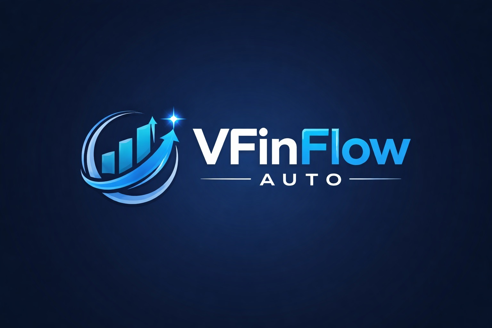

Controle Financeiro Inteligente

A VFinFlow é uma plataforma desenvolvida para facilitar o gerenciamento financeiro de empreendedores. O sistema utiliza Inteligência Artificial para realizar previsões de lucro, acompanhar receitas e despesas, registrar transações financeiras e apresentar gráficos que auxiliam na tomada de decisões.
Além disso, a plataforma conta com integração via Open Banking, permitindo sincronizar automaticamente as contas bancárias do cliente, tornando o controle financeiro mais rápido, seguro e eficiente.
Nosso cliente é uma empresa especializada em Nail Designer, que precisava de uma forma mais prática de acompanhar seu fluxo de caixa e controlar todas as entradas e saídas financeiras do negócio.
A VFinFlow foi desenvolvida para resolver esse problema, oferecendo uma plataforma capaz de organizar as movimentações financeiras, apresentar gráficos, gerar previsões de lucro através da Inteligência Artificial e integrar automaticamente as contas bancárias utilizando Open Banking.
Cargo: Desenvolvedor Back-end
LinkedIn: https://www.linkedin.com/in/alexandry-tavares-39b52a28a
Cargo: Desenvolvedor Front-end
LinkedIn: https://www.linkedin.com/in/mateus-rodrigues-4a3873262/
Cargo: Designer UI/UX
LinkedIn: https://www.linkedin.com/in/kayke-ara%C3%BAjo-4277a9367/
Cargo: Analista de Sistemas
LinkedIn: https://www.linkedin.com/in/eduardo-pereira-227316366